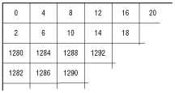
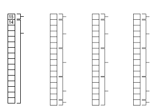

A frame buffer can also be fragmented in horizontal bands, with each band stored in a separate section of VRAM. To create a fragmented buffer, the VDL contains a new buffer pointer at the beginning of each line where a new buffer segment begins. A segmented frame buffer allows one segment to be double-buffered while the other segments are single-buffered, saving VRAM for other purposes.

Figure 1: Storing pixels in a frame buffer using left/right pairs.
Figure 2 shows an array of pixels as they're displayed on the screen. Within each pixel's square is the byte offset in the frame buffer where that pixel is stored. For example, the first pixel in the upper-left corner (column 0, row 0) is stored at byte offset 0-the high-order 16 bits of the first 32-bit word of the frame buffer. The pixel below it (column 0, row 1) is stored at byte offset 2-the low-order 16 bits of the first 32-bit word of the frame buffer. The pixel at column 1, row 0 is stored at byte offset 4-the high-order bits of the second word of the frame buffer; and the pixel at column 1, row 2 is stored at byte offset 6-the low-order bits of the second word of the frame buffer. This goes on to the end of the first two rows, and then jumps to the beginning of the next pair of rows, row 2 and row 3. The pixel at column 0, row 2 is stored in the high bits of word 320, the pixel at column 0, row 3 is stored in the low bits of word 320.
Pixels stored together in a single word of a frame buffer are called left/right pairs. 3DO pixel interpolation hardware reads these pairs using a left channel for the high-order pixel in a word, and a right channel from the low-order pixel in a word. (VRAM is specially designed to read these pairs quickly.) The hardware then averages color between the pixels in the pair.

Figure 2: Display modes.
When the display generator reads pixel values, it extracts a 15-bit color value regardless of the display mode. In 1555 or P555 modes, the 15-bit value is extracted from bits 14 to 0 of the pixel. In 15541 and P5541 modes, the low bit of the blue value is missing, so the display generator fills it in with a fixed value (0 or 1) set in the VDL.
The display generator also extracts the pixel's cornerweight location if the display mode supports it. (The location is contained in a value called the VH value because one bit specifies the vertical location and the other bit specifies the horizontal location.) In 1555 and P5541 modes, where only one bit is available for the VH value, the VDL supplies the other bit, a constant value of 0 or 1. The VH value then bypasses the background pixel detector, the CLUT set, and SlipStream. It goes directly to the interpolator, where it's used for subpixel shading.
In P555 and P5541 modes, the display generator extracts the 1-bit CLUT set value, which it uses to determine which of two CLUT sets to use.